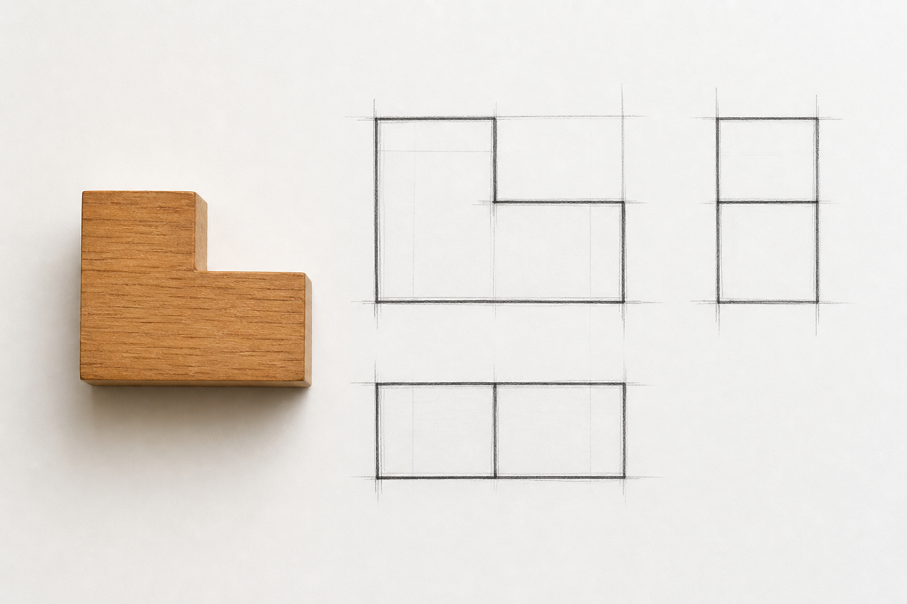
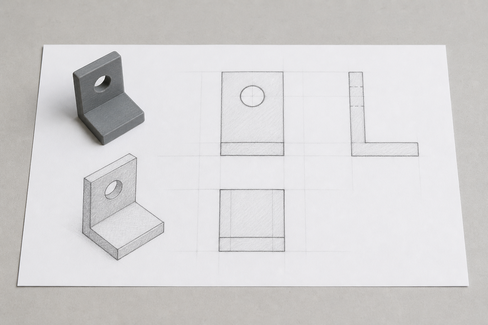
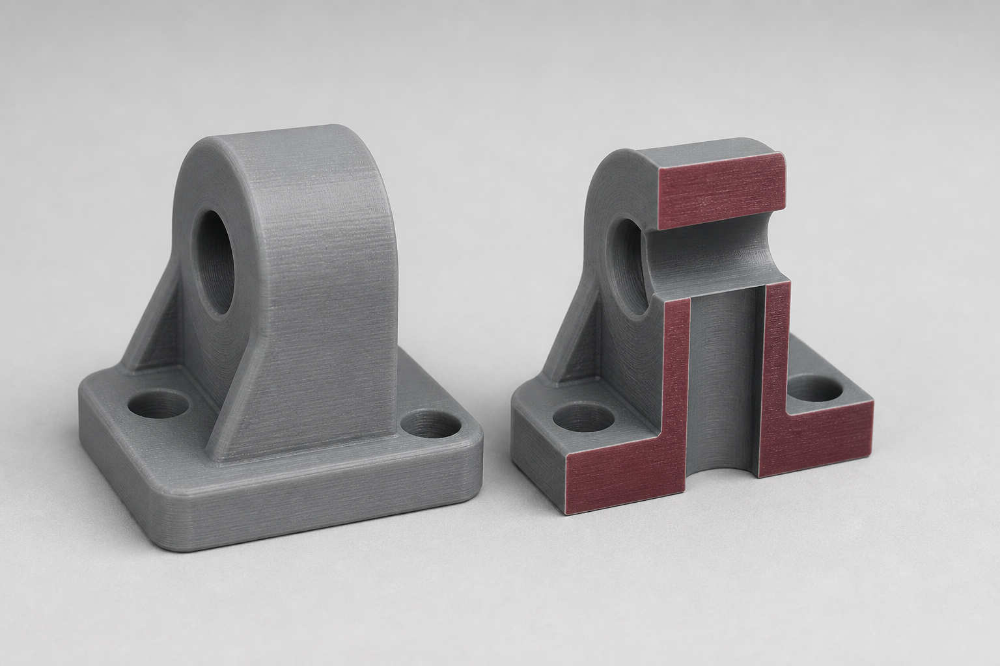
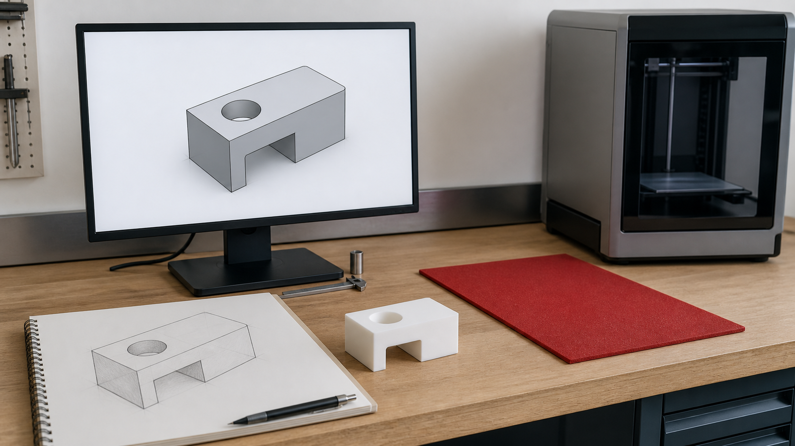
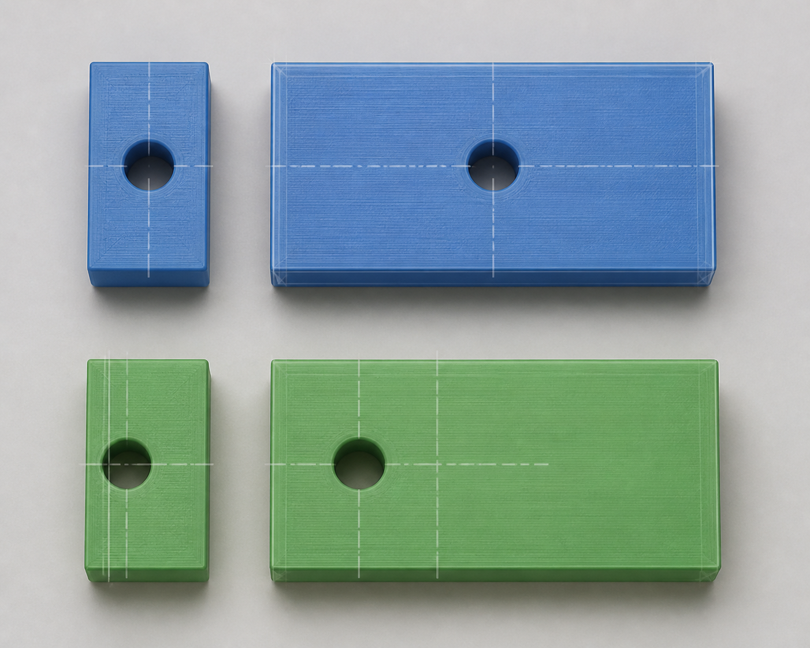
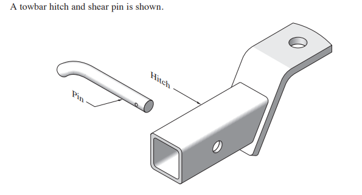
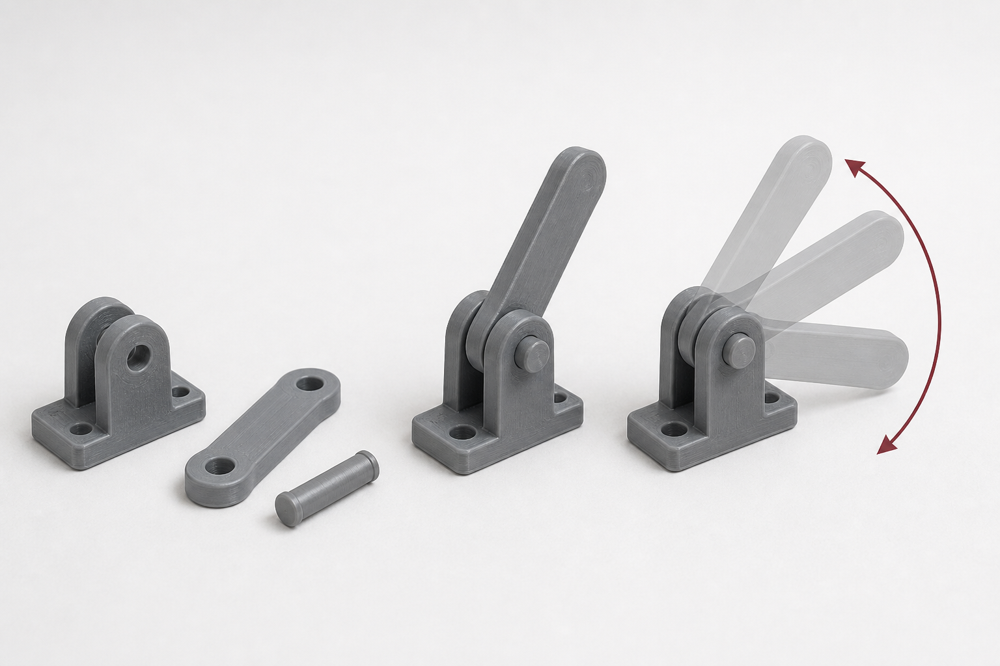
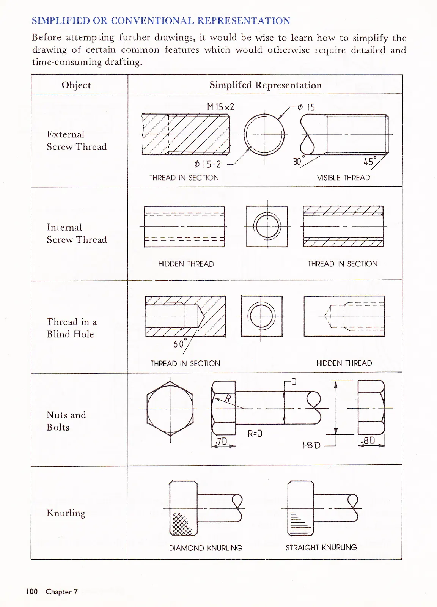
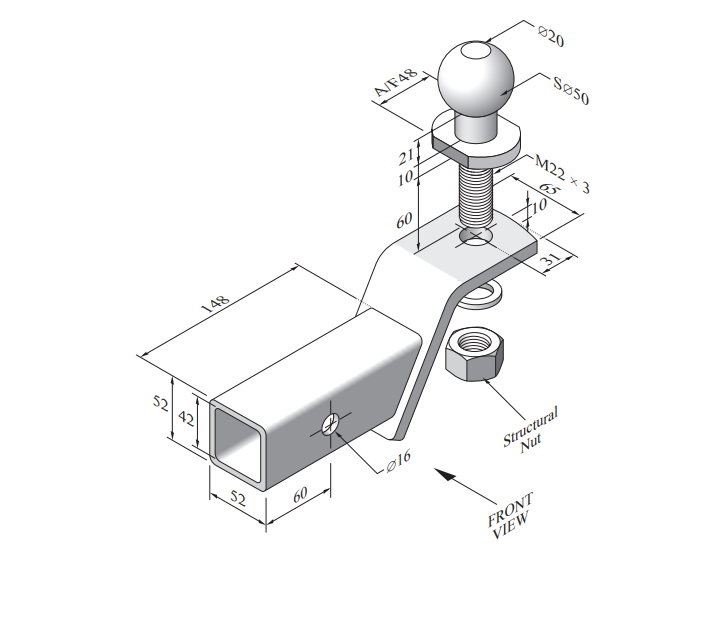

Classroom presentation
Engineering Drawing slides
Use the module deck for short, continuous whole-class explanation, retrieval and exit evidence.
Module 3 of 4 · Term 3
Select projection systems, preserve design intent in CAD and release only the technical claims supported by controlled evidence.
Classroom presentation
Use the module deck for short, continuous whole-class explanation, retrieval and exit evidence.
Section M03S01
Students can apply this theory to the current engineering-drawing activities by researching projection types, completing freehand responses from source examples and explaining why particular views are useful. The teacher's current source and template control local third-angle arrangements and drawing conventions, while later CAD work should preserve the supplied dimensions and convert the same view logic into more precise digital drawings.
Engineering drawings communicate shape, size, position and internal form by choosing views that make the required information clear. Different projection systems answer different questions, so the aim is not to memorise one 'best' method. Instead, you need to recognise what information a viewer needs and select a representation that communicates that information efficiently. In engineering graphics, this often means combining multiview drawings, pictorial views and section views rather than expecting one image to do everything.
Orthographic or multiview drawing represents an object through separate flat views, commonly showing different sides of the same form. These views are useful because features can be compared directly across the drawing set. A hole shown in one view should line up logically with the same feature in another. The teacher's current source and template control the specific third-angle arrangement and local conventions used in class.
The word orthogonal refers more broadly to relationships involving right angles or perpendicular directions. In engineering drawing, orthographic projection uses controlled viewing directions to create coordinated views, but it is better to understand the specific drawing system being used than to treat every use of 'orthogonal' as identical.
Pictorial drawings show more than one face of an object in a single view and can make three-dimensional form easier to imagine. Isometric drawing is one common pictorial method in which the main axes are represented in a consistent geometric relationship. Oblique drawing usually keeps one main face more directly presented while projecting depth away from it. Dimetric and trimetric projections are other pictorial systems in which the main axes are represented with different relationships. These systems can communicate form effectively, but none automatically includes every detail required for manufacture.
Perspective is different from isometric. Perspective represents the way objects appear to reduce in size as they recede from the viewer, creating a more visually realistic sense of depth. Isometric does not imitate this visual convergence in the same way. A perspective view may be excellent for communicating appearance, while orthographic or other engineering views may be more useful when precise relationships need to be read and checked.
The choice of view should follow the purpose. A simple component may need only a small number of coordinated views. A more complex component may require an additional view or a section. More views are not automatically better. Extra views that repeat the same information can make a drawing set crowded without improving understanding.
Freehand sketching does not mean drawing carelessly. It is a disciplined way to explore form, communicate ideas quickly and test whether you understand the relationship between views before moving into CAD. A useful freehand drawing may not have machine-perfect lines, but its proportions, alignments and feature relationships should still be intentional.
Start with the overall form rather than details. Light construction lines can establish width, height, depth and alignment before stronger final lines are added. This reduces the temptation to guess where features belong. If a hole, slot or step appears in several views, use alignment to transfer its position rather than drawing each view independently.
This process is useful because it separates thinking from presentation. If you begin by carefully darkening every line, correcting a mistake becomes harder. Light construction allows you to test the geometry first. Freehand work is therefore a form of problem solving, not rough decoration added before the 'real' drawing begins.
A three-dimensional-looking sketch can still hide important information. For example, an isometric view may make the outer form of a component easy to understand, but an internal hole, cavity or recess may remain partly or completely hidden. This is why engineering communication often uses more than one representation of the same object.
A section view represents an object as though part of it has been cut away so that internal features can be seen more clearly. This is especially useful when hidden lines would make a normal view difficult to interpret or when the relationship between internal and external features needs to be understood.
Imagine a bracket with a hole passing through part of its body. A pictorial view can communicate the overall shape of the bracket, while coordinated orthographic views can show the position of the main faces and the hole from different directions. If the internal path of the hole or surrounding material is still unclear, a section view can reveal that relationship directly. The section is chosen because it answers a question that the external views do not answer clearly enough.
This does not mean hidden or internal features always require a section. Sometimes another normal view communicates them sufficiently. The decision depends on clarity. The strongest drawing set uses the smallest useful combination of views needed to explain the component without unnecessary repetition.
When working from teacher-provided towbar drawings, nuts-and-bolts exercises or sectional examples, preserve the source information exactly. Do not guess or alter dimensions that are not supplied. First identify what each view is trying to communicate, then use alignment and shared features to understand how the views relate.
The same discipline applies when you later move into CAD. Digital tools can produce precise geometry and dimensioned drawings, but the software still depends on your understanding of projection, view selection and feature relationships. Before modelling or dimensioning a component, you should be able to explain why a particular view is needed and what information it contributes.
Projection choice also connects directly to materials and manufacturing. A drawing needs to communicate enough about a component for its form, features and relationships to be understood in the context of how it may be made. In the next section, you will carry this representation logic into CAD modelling and consider how materials, manufacturing processes and graphical decisions work together.



Applied Learning Activity · about 22 minutes
Choose the smallest useful combination of views for a communication need and construct freehand views through alignment.
Do: Choose the view that best answers each question; one view may not answer everything. Order the freehand routine. Recommend a compact view set for a fictional bracket and justify every included view.
Start or resume this activityFormative practice only — not formal assessment, folio submission, teacher-observed evidence or a competency decision.
Practice, not submission. Your responses stay in this browser unless you export them.
Resume this packageHigher-order capstone · justify
Begin with communication needs, then justify the smallest complete view set and the checking method.
Section M03S02
Students can apply this theory during the Onshape towbar practice by treating the supplied drawing as the authority for geometry. The initial 50 mm outside square is one supplied datum for the first exercise only; all remaining dimensions and relationships must come from the source drawings and current teacher instructions. Students can then assemble the completed parts and investigate permitted motion or animation as a digital relationship exercise without assuming that the model establishes real material, load, manufacturing or safety information.
A three-dimensional CAD model is more than a digital object that looks correct on screen. A useful engineering model contains decisions about geometry, relationships and how features should respond when something changes. It also needs to remain connected to its source information. When you model from a supplied engineering drawing, that drawing is the authority for the exercise: CAD helps you represent the information accurately, but it does not give you permission to guess missing dimensions, materials or manufacturing details.
Many engineering models begin with a 2D sketch. Lines, circles, arcs and other sketch geometry establish a profile or construction information that can then be used to create three-dimensional features. The important step is deciding which relationships should remain controlled as the model develops.
Constraints describe relationships between sketch elements. They can control features such as alignment, position or geometric relationships. Dimensions can also control important sizes and locations. Together, these controls can make a sketch predictable when it is edited. A fully constrained sketch has its intended degrees of freedom controlled, but that does not automatically make the design itself good. A poorly planned shape can be completely constrained and still fail to suit its purpose.
Design intent means building the model so important relationships reflect what the part is meant to do. Imagine a hole that is intended to remain centred on a face. If the surrounding part changes size, a model with clear design intent should preserve that centred relationship rather than leaving the hole in an arbitrary position. This requires you to think about dependencies: which feature depends on which earlier feature or reference?
In parametric feature-based modelling, dimensions, constraints, features and their relationships can be used to control how a model responds to changes. Editing an earlier value may cause dependent features to update. This is powerful when the relationships have been planned well, but a poorly structured dependency can also cause unexpected changes further through the model.
Direct modelling allows geometry to be changed more directly without relying on the same type of feature history and parameter relationships. It can be useful when making certain edits or working with geometry that does not have a useful original feature structure. Parametric modelling is not always better than direct modelling. They are different approaches, and the useful method depends on the model, available information and purpose of the edit.
Not every CAD model is dominated by straight-edged or circular engineering features. NURBS and other freeform surface methods can represent smooth, complex curves and surfaces. These approaches are valuable for forms where controlled surface shape matters. By comparison, many prismatic engineering components can be represented efficiently with sketches and features based on simpler geometric profiles. The modelling method should suit the geometry rather than being chosen because it sounds more advanced.
Geometry does not exist separately from the physical object it represents. Material properties can affect design decisions because materials differ in characteristics such as strength, stiffness, hardness, density, durability and response to manufacturing processes. Environmental considerations may also influence material thinking, including resource use, expected service life, waste and what happens to material at later stages of its life.
CAD does not choose the correct material for you. A software material setting may help describe or analyse a model in particular workflows, but the engineering decision still requires appropriate evidence and knowledge of the intended application. For the supplied towbar practice, do not infer a real material grade, load capacity, tolerance or manufacturing process from the appearance of the model. The supplied drawing and current teacher instructions control the exercise information.
The likely manufacturing method can influence how a component is represented. A designer may need to consider whether geometry can realistically be produced, how separate parts relate, what information a manufacturer would need and whether particular features require additional drawing information. This does not mean you should invent manufacturing operations when they have not been supplied. It means understanding that engineering geometry eventually needs to connect with a physical method of making something.
Cutting and costing information works in the same way. A model can help provide useful geometric evidence, but quantities, stock information, costs and manufacturing assumptions need an authorised source. A visually convincing CAD model is not evidence that those values have been established.
CAD is used to create, develop and communicate digital design information. CAM uses digital information to support computer-aided manufacturing processes. The connection between them can reduce repeated work because geometry developed during design may contribute to later manufacturing information.
However, a smooth 3D model is not automatically ready for manufacture. The model may still contain incorrect geometry, missing information, unsuitable assumptions or features that have not been checked against the source drawing. Manufacturing may also require information beyond the visible model. CAD/CAM is therefore a connected workflow, not an automatic path from attractive model to finished component.
CAM also does not remove the need for checking. Computer-controlled processes follow supplied information very effectively, including incorrect information. Before digital geometry contributes to a manufacturing workflow, it needs appropriate review for the intended context. In school work, you should not assume that creating a CAD model authorises or defines a manufacturing operation.
Consider the class towbar practice. The first exercise begins from a 50 mm outside square. That value is one supplied datum for that exercise, not a general towbar dimension. After establishing the supplied starting geometry, continue from the teacher's drawings. Where a dimension is shown, use it as the source information. Where a value is not provided, do not estimate it from the screen or invent a convenient number.
A useful dependency test is to imagine that one authorised dimension in a fictional component changes. Suppose a rectangular base becomes wider while a hole is intended to remain centred on that base. If the hole position was built from the centre relationship, the model can update while preserving the design intent. If the hole was positioned using an unrelated fixed location, changing the base may leave it off-centre. The model can still appear smooth and technically complete, but its dependency structure has failed to preserve the intended relationship.
Assemblies add another level of design thinking because separate parts must be brought together in meaningful relationships. Digital assembly tools can help communicate how components connect and can support movement where appropriate. Again, successful motion on screen does not prove that a physical design is safe, manufacturable or suitable for a real load. It demonstrates that the digital relationships defined in the model permit that movement.
The next stage is to turn model intent into clearer engineering communication. You will connect your parts and assemblies with dimensioning, drawing standards and coordinated views, then examine how assembly relationships can be represented through movement and animation. The same principle continues throughout: a strong digital model does not merely look right; its dimensions, dependencies, drawings and assembly behaviour should communicate the intended design consistently.



Applied Learning Activity · about 24 minutes
Model relationships so authorised changes preserve design intent, while keeping material and manufacturing claims within the source evidence.
Do: Compare the two fictional model structures. Classify each claim as supported or unsupported by the model evidence. Write a dependency statement for one feature from the teacher source drawing.
Start or resume this activityFormative practice only — not formal assessment, folio submission, teacher-observed evidence or a competency decision.
Practice, not submission. Your responses stay in this browser unless you export them.
Resume this packageHigher-order capstone · evaluate
Separate geometric evidence, editing behaviour, material evidence and manufacturing readiness before making the judgement.
Section M03S03
Students can apply this theory by comparing the teacher's dimensioned and undimensioned engineering drawings, identifying which information defines feature size and location, and avoiding invented or duplicated values. They can then bring accurately modelled parts into the Onshape assembly-and-animation pathway, define the required digital relationships and use motion as evidence for reviewing the model while avoiding claims that animation proves real-world safety, compliance or manufacturing readiness.
Engineering drawings need to communicate more than what a component looks like. They must help a reader understand the intended size, position and relationships of its features. Dimensions, tolerances, surface information, assembly relationships and other conventions provide this extra information. Their purpose is not to make a drawing look technical. Each item should answer a useful question without creating unnecessary duplication or contradiction. Exact notation and values in your class work are controlled by the current teacher-supplied drawings, licensed standards access and teacher instructions.
A dimension communicates a measured relationship. Some dimensions describe size, such as the size of an overall form or feature. Others describe location, showing where a feature is positioned relative to another feature or reference. Understanding this difference helps you decide what information a drawing actually needs.
Imagine a plate containing a hole. Knowing the size of the hole does not tell the reader where the hole belongs. Location information is also required. In the same way, locating the centre of a hole does not communicate its size. A useful dimensioning system provides enough information to define the intended geometry without repeating the same relationship unnecessarily.
More dimensions do not automatically make a drawing better. Unnecessary duplication can create clutter and, more importantly, can create conflicting information if one value changes while a repeated value is not updated. Dimensions should therefore be selected as a coordinated system rather than added wherever there is empty space.
One issue to watch is a long dimension chain, where one feature is located from the next, then another from that feature, and so on. Chained relationships may be appropriate in some contexts, but they can also make the intended reference difficult to understand. If several important features are meant to relate to the same reference, communicating those relationships from that reference may make the design intent clearer. The correct approach depends on the controlled source and drawing purpose rather than a rule invented for one example.
Manufactured objects also involve variation. A nominal size is the stated or intended reference size of a feature. Upper and lower limits describe boundaries around permitted variation, while a tolerance expresses the allowable variation associated with a dimension. Tolerance does not mean acceptable carelessness. It is controlled information used because real manufacturing cannot produce every physical feature at one infinitely exact value.
Tolerances also relate to how mating parts behave. A clearance fit provides clearance between mating features. A transition fit describes a relationship in which the resulting fit can fall between clearance and interference conditions depending on the actual sizes produced. An interference fit creates interference between mating features. These concepts describe intended relationships; you should not select a fit simply because two CAD parts appear to touch or overlap on screen. Exact limits, notation and fit selection must come from the authorised source rather than guessed numerical thresholds.
Engineering drawings can also communicate requirements such as surface finish and welding information. Surface information helps describe requirements for the condition of a manufactured surface. Weld information can communicate how components are intended to be joined. These conventions have controlled notation, so their purpose can be understood in class without inventing or reproducing symbol tables. When exact notation is required, use the current teacher-supplied source, licensed standard access and teacher instructions.
A part drawing communicates information about an individual component. An assembly drawing communicates how multiple components relate when brought together. The two are connected: if the geometry of a part is incorrect, the assembly may also become incorrect even if the components can still be positioned together digitally.
In CAD assemblies, mates or other assembly constraints define relationships between components. Depending on the relationship used, parts may be held in a particular position or permitted to move in a controlled way. This makes an assembly useful for investigating how components connect and how intended movement may occur.
Animation or a motion study can make those relationships easier to understand. Movement can reveal that a component travels in an unexpected direction, that a defined relationship permits too much or too little motion, or that visible geometry appears to pass through another component. It can therefore provide useful evidence for reviewing a digital design.
However, an assembly that moves on screen is not proof that the physical mechanism will work. A digital model may not include all relevant material behaviour, manufacturing variation, forces, loads, clearances or other real-world conditions. Likewise, an animation can sometimes conceal a problem because movement looks smooth when viewed from one angle. A different viewpoint, section or closer inspection may reveal interference that was difficult to see during the animation.
Animation also does not prove safety, compliance or manufacturability. It shows the behaviour of the relationships and geometry represented in the digital model. That evidence can support design thinking, but it cannot replace the additional checks required for a real physical product.
Before treating engineering work as ready for the next stage, check the drawing, assembly and motion evidence together. Software can generate precise-looking drawings and smooth animations from information that is incomplete or incorrect. A professional-looking output is therefore not the same as a verified design.
For example, consider a fictional plate with a hole whose centre must be located relative to two controlled reference edges. One approach could dimension the hole position from one nearby feature, then locate that feature from another, creating a chain. If the actual design intent is for the hole to remain located from the two reference edges, it may be clearer to communicate its location directly from those references. The hole size is then communicated separately from its location. Adding another dimension that simply repeats the same horizontal or vertical relationship would not add useful information and could create a contradiction later.
This reasoning matters when working from the teacher's dimensioned and undimensioned towbar drawings and Nuts and Bolts practice. The dimensioned source provides controlled information that can help you interpret the undimensioned representation. Do not fill apparent gaps by estimating measurements from an image. Similarly, the fact that CAD software can produce dimension annotations does not mean those dimensions are automatically correct or compliant with a standard.
Australian engineering drawing conventions provide a shared communication framework, including conventions associated with AS 1100. In this course, the goal is to understand why standardised communication matters and learn to read and apply the authorised examples provided to you. Exact standard wording, symbols, values and detailed requirements remain controlled information and should come from licensed access and the current teacher instructions.
You now have a connected engineering communication process: select useful views, build geometry with design intent, dimension from controlled information, organise parts into assemblies and test what digital motion can and cannot demonstrate. In the student-negotiated project, these skills become tools for responding to a new brief. Your challenge will be to decide which drawings, models, dimensions and visual evidence best communicate your own developing solution while keeping every claim tied to reliable information.



Applied Learning Activity · about 24 minutes
Communicate size and location without duplication, and limit assembly or animation claims to what the digital evidence demonstrates.
Do: Classify the drawing information. Check each release claim against the evidence described. Write one final release note that names both demonstrated evidence and a limitation.
Start or resume this activityFormative practice only — not formal assessment, folio submission, teacher-observed evidence or a competency decision.
Practice, not submission. Your responses stay in this browser unless you export them.
Resume this packageHigher-order capstone · evaluate
Audit dimension intent, assembly definition, animation evidence and unresolved controlled information in that order.
End-of-module review
Completion means the questions were checked and the capstone has text saved. It does not mean submission or a formal mark.